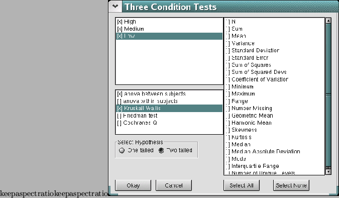

3 or more sample tests are used when you have 3 or more samples - quite simple really! For example, we could expand the above experiment with alcohol and reaction time by having more than 2 different levels of alcohol - let's say the first level would be no alcohol (zero units), the second would be 2 units and the third would be 4 units. This means that there would be three conditions in the experiment.

To analyse this kind of experimental design, you might consider using a t test, firstly to compare 0 units against 2 units, then 2 units against 4 units, then again to compare 0 units to 4 units. That way you would be comparing all the conditions against each other.
However, in reality you would not be able to do this because you would be analysing the same set of data three times. Because statistics is based upon, well, statistics, the chance of your getting a significant result increases each time you analyse a set of data, which increases the likelihood of there being a Type I error - when a significant result is found (and the null hypothesis rejected) when there wasn't really a significant result in the first place.
When you have more than 3 conditions, you need to use other tests, and probably the most famous (and in the authors experience, the most used) test is the ``analysis of variance'' (or anova for short). This test will allow you to compare a large number of conditions with each other, and tell you whether any of them differ significantly.
The problem with anova is that they don't actually tell you where the significant difference is, they only tell you whether one exists, and there are ways to find out where the difference lies but that will be explained later in the section.
The anova is for parametric data. If you have non parametric data, there are equivalents that you can use with SalStat: The Kruskal-Wallis H test, and the Friedman Chi Square, both of which act like a non-parametric anova, but SalStat deals with them in the same way. The Kruskal-Wallis H test is for between subjects designs and the Friedman test is for within subjects designs.
Once you have entered your data, click on the ``analyse'' menu, then select ``3+ Sample Tests...'' for the appropriate dialog to appear. This dialog is a bit different from the other 2 test dialogs that you have encountered (assuming that you have followed this book in a linear order of course), but the main difference is that you will not select which columns you want to analyse by using drop down boxes - this is because there may be more than 2 columns you want to analyse. Instead, you have a check list to select your columns, rather like the dialog box that appeared when you wanted to get a set of descriptive statistics. Only columns with data will appear there, and to select one, all you have to do is click on the box to the columns left and it will be selected (click again to de-select it).
Like the other test dialogs, there is a list of descriptive statistics to the right hand side and you can select which ever ones you want (if you want any of course which is usually a good idea). The next thing to do is select which test you want - again using a check list box (perhaps SalStat should be called ``CheckListStat'' instead?), and finally select which hypothesis you want.
SalStat differs from other statistics packages by allowing you to choose mutually exclusive tests: You can choose an anova for within or between subjects, and get the non parametric equivalents at the same time. This might not be orthodox operation for statistics packages, but let's face it - if you wanted to analyse the same set of data using different tests, you could do so anyway, but it would just take longer. SalStat allows you to cheat in a more efficient manner, and leaves the decisions up to you.
Okay, so you have done all you need to do: Selected the columns you want to analyse (necessary), chosen the test (not necessary, but if you don't, there will be no results to look at), and chosen the hypothesis (one or two tailed). Optionally, you have a list of descriptive statistics to choose from, but that's your choice. The next thing to do is click on the ``okay'' button.
Wait a short while (depending upon how large your set of data is), and the results should appear in the output window. The results for an anova differ slightly from the other tests in that they show a lot more information. You should be shown a table where the first column lists the factor you are analysing, the error, and the total. The next column shows the Sum of Squares (SS) for each factor, then the degrees of freedom (df) followed by the Mean Square (MS). These are of interest, but the main thing for you to look at now are the last 2 columns. The first of these is titled ``F'', and this is your test statistics. If it is less than 1.0, then it will not be significant no matter what your data look like. The final column lists the p-value, and you should be aiming for a p of less than 0.05 (or 5%) which means you have a significant result.
The Friedman and Kruskal-Wallis H tests do not have as much detail as the anova which shows a table with the degrees of freedom, sums of squares and so on.